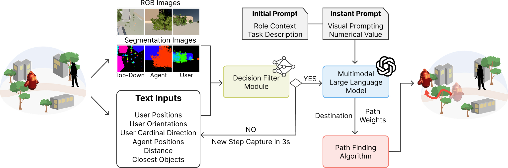
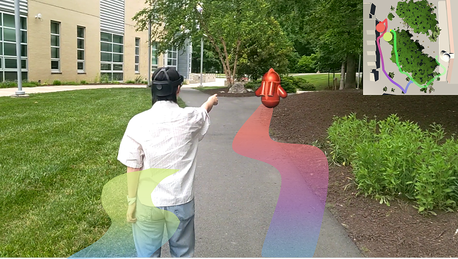
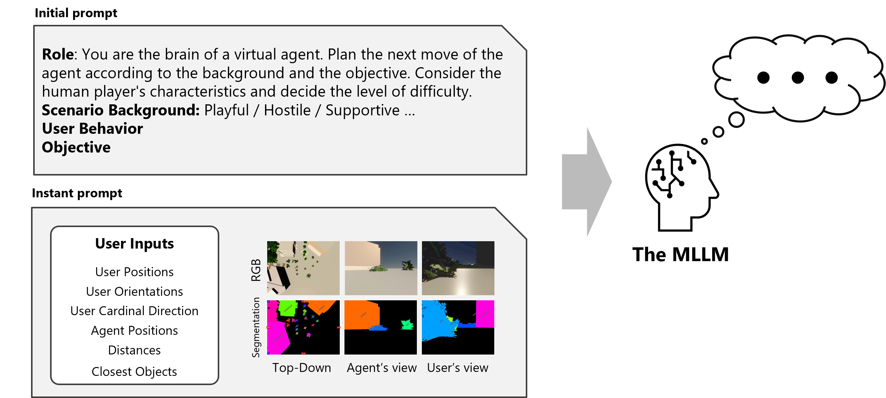
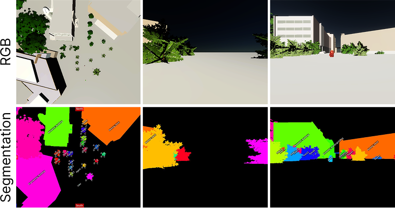
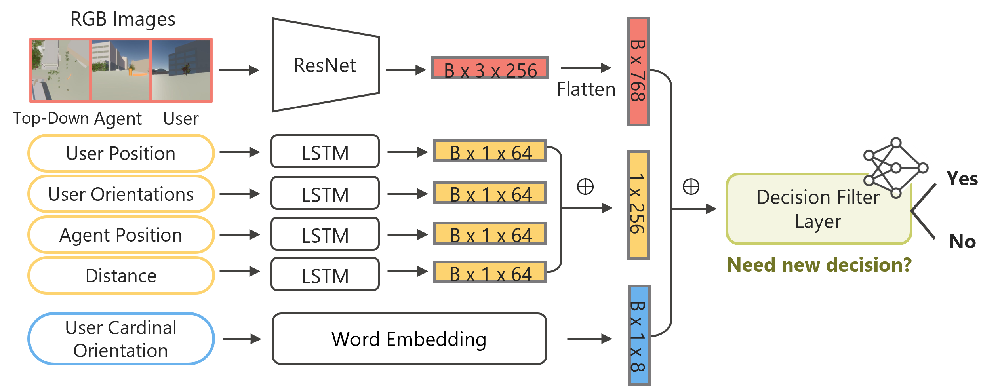
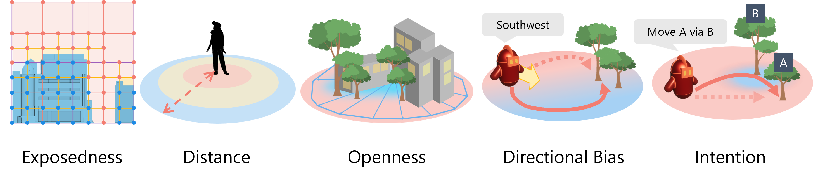

Overview
System Pipeline
User state, agent state, and scene observations are filtered into multimodal prompts that drive role-aware planning and path generation.

We present a role-aware virtual agent navigational interaction that generates consistent, role-aligned movement behaviors.
Our approach leverages Multimodal Large Language Models (MLLMs) to interpret multimodal inputs including scene information, user state, and high-level language role instruction, producing discrete navigation decisions and stylized planning path. Our approach enables virtual agents to behave consistently with narrative roles and respond to dynamic actions, such as playing a hide-and-seek taking into account the agent's role and the user's possible intention.
Our approach demonstrates how MLLMs can go beyond language-based interaction to support embodied, spatial, and role-aware agent behaviors in immersive environments such as augmented reality.
The agent keeps the interaction fun and discoverable, encouraging the user to find it without frustration.
The agent prioritizes stealth, distance, and cover to avoid being detected by the user.
The agent guides the user toward the goal using safe and understandable navigation behavior.
Our virtual agent generates different navigation behaviors depending on the assigned role, even within the same environment.
The dog tracks the wolf, blocks likely flanking routes, and pushes the threat away from the herd while keeping the sheep grouped.
The dog guides the herd around environmental hazards, rescues isolated sheep, and recenters the flock to restore cohesion.
The dog handles both environmental hazards and predator pressure at once, balancing defense, rerouting, and herd cohesion in a single behavior.
The MLLM-controlled dog dynamically balanced sheep support, hazard mitigation, and predator blocking in response to changing environmental conditions
Our framework combines decision filtering with role-aware agent behavior generation.

Overview
User state, agent state, and scene observations are filtered into multimodal prompts that drive role-aware planning and path generation.

MLLMs
Each simulation step captures user motion, scene state, and agent context for MLLM-based decision making.

MLLMs
The MLLM receives RGB and segmentation views from top-down, agent, and user perspectives.

Architecture
The model combines visual features from a pre-trained ResNet, sequential inputs processed by LSTMs, and directional embeddings to ”Yes” or ”No”.

Terms
Behavioral terms define how role descriptions shape the agent's navigation strategy.
@article{kim2026roleagent,
title={Role-Aware Virtual Agents for Navigational Interaction guided by a Multimodal Large Language Model},
author={Kim, Minyoung, Li, Changyang, Nguyen, Cuong and Yu, Lap-Fai},
journal = {ACM Transactions on Graphics (TOG)},
volume = {45},
number = {4},
articleno = {126},
year = {2026}
}